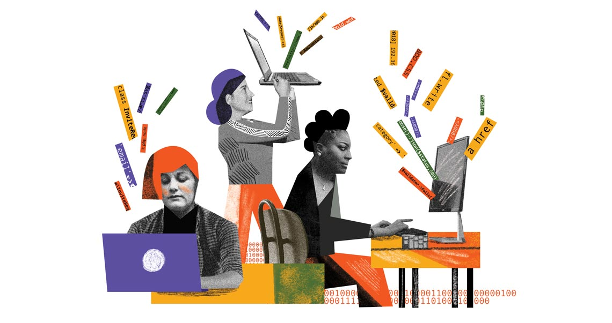
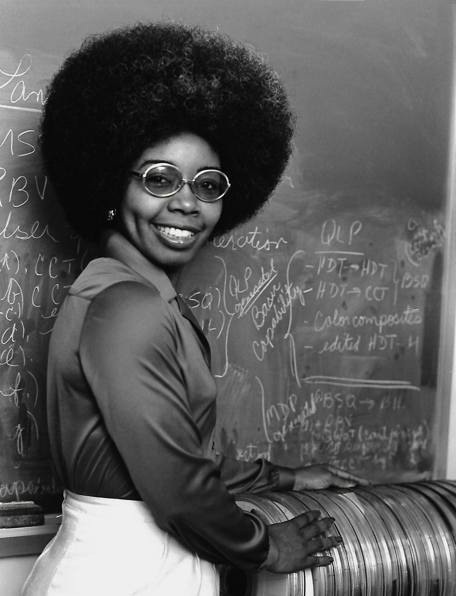

"A importância das mulheres na programação"
A tecnologia se mostra, cada vez mais, parte imprescindível do nosso cotidiano. Sem internet, redes sociais ou até mesmo as plataformas de ensino remoto e os aplicativos que nos permitem estar próximos aos nossos familiares e amigos a todo momento, não teríamos as facilidades que temos na nossa rotina. O que muitos não sabem, no entanto, é que por trás dessas invenções estão grandes nomes femininos que fizeram história para que hoje pudéssemos ter o que conhecemos por computadores e outras criações que facilitaram e serviram de base para as tecnologias que conhecemos hoje.
Grace Hopper
Grace Murray Hopper (Nova Iorque, 9 de dezembro de 1906 — Condado de Arlington, 1 de janeiro de 1992) foi almirante e analista de sistemas da Marinha dos Estados Unidos nas décadas de 1940 e 1950, criadora da linguagem de programação de alto nível Flow-Matic (em desuso) — base para a criação do COBOL — e uma das primeiras programadoras do computador Harvard Mark I em 1944.

Karen Spärck Jones
Karen Spärck Jones FBA (26 de agosto de 1935 - 4 de abril de 2007) foi uma cientista da computação britânica pioneira responsável pelo conceito de frequência inversa de documentos (IDF), uma tecnologia subjacente à maioria dos mecanismos de busca modernos . Em 2019, o The New York Times publicou se obituário tardio em sua série Overlooked, chamando-a de "pioneira da ciência da computação para o trabalho combinando estatística e linguística, e uma defensora das mulheres no campo." A partir de 2008, para reconhecer suas realizações nas áreas de recuperação de informação (IR) e processamento de linguagem natural (NLP), o Prêmio Karen Spärck Jones é concedido a um novo destinatário com pesquisa excelente em um ou ambos os seus campos.

Valerie Thomas
Valerie L. Thomas (Maryland, Estados Unidos, 8 de fevereiro de 1943) é uma cientista e inventora americana. Ela inventou o transmissor de ilusão, pelo qual recebeu uma patente em 1980. Ela foi responsável pelo desenvolvimento dos sistemas de processamento de imagem em formatos de mídia digital usados nos primeiros anos do programa Landsat.
Radia Perlman
Radia Joy Perlman (Portsmouth, 1 de janeiro de 1951) é uma cientista da computação estadunidense, projetista de software e engenheira de redes. É algumas vezes referenciada como a "mãe da Internet"[1] por sua invenção do protocolo Spanning Tree (STP), que é fundamental para a operação de pontes de rede mais conhecida por bridge (redes de computadores), enquanto trabalhava para a Digital Equipment Corporation. Ela também fez grandes contribuições para muitas outras áreas de design e padronização de redes, como os protocolos de roteamento link-state. Mais recentemente, ela inventou o protocolo TRILL para corrigir algumas das deficiências das spanning trees. Atualmente, ela é funcionária da Dell EMC.